defend
400 ms per slot; loop: True

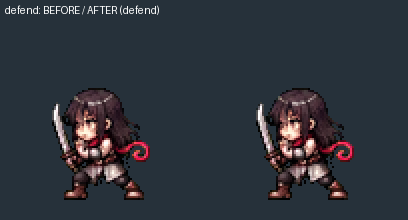
Partial review. Playback not verified. Left animation: normal. Right: half speed. Reload to replay one-shots.
240 ms per slot; loop: True
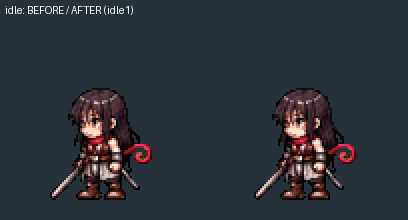
180 ms per slot; loop: True
400 ms per slot; loop: True

150 ms per slot; loop: True
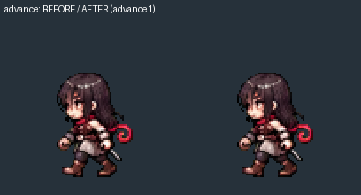
90 ms per slot; loop: False
90 ms per slot; loop: False
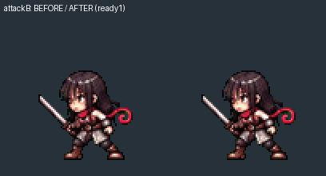
220 ms per slot; loop: True
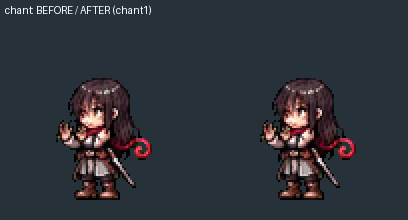
130 ms per slot; loop: False
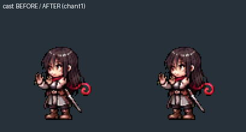
150 ms per slot; loop: False
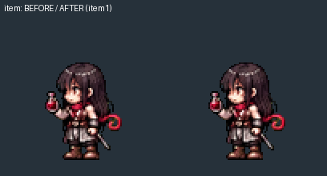
110 ms per slot; loop: False
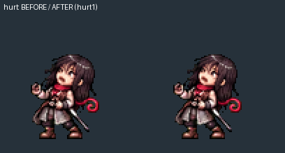
480 ms per slot; loop: True
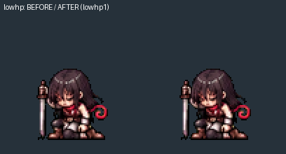
140 ms per slot; loop: False
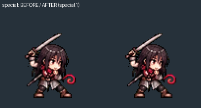
160 ms per slot; loop: False
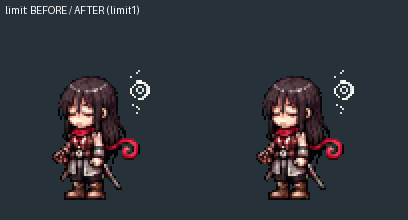
260 ms per slot; loop: True
620 ms per slot; loop: True
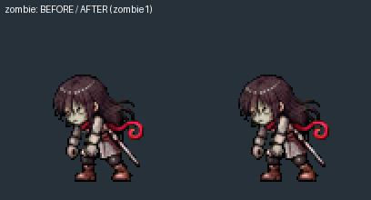
400 ms per slot; loop: True
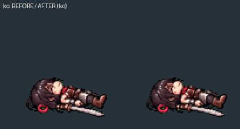

900 ms per slot; loop: True
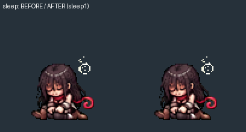
400 ms per slot; loop: True

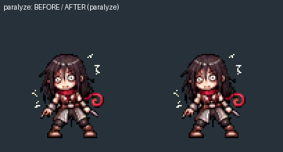
420 ms per slot; loop: True
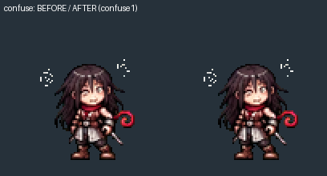
200 ms per slot; loop: True
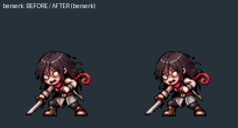
170 ms per slot; loop: True
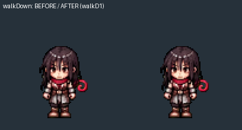
170 ms per slot; loop: True
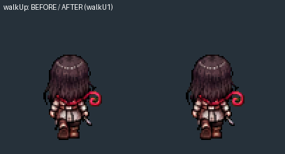
170 ms per slot; loop: True
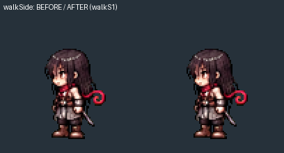
400 ms per slot; loop: True
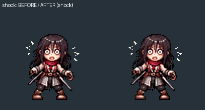

400 ms per slot; loop: True
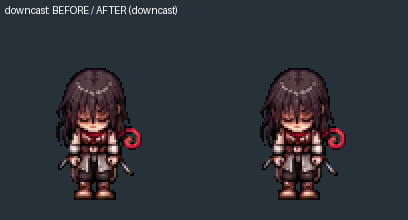

400 ms per slot; loop: True

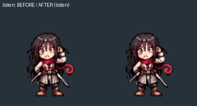